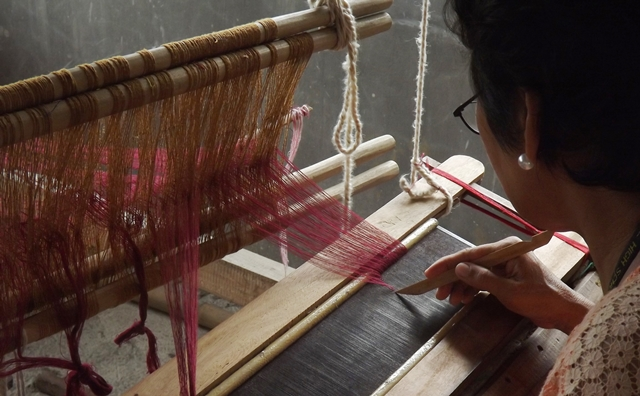

Bagtason Loom Weavers
Traditional weaving of Patadyong textiles

Alima Studio Pottery
Handcrafted earthenware using traditional methods
The Bagtason Loom Weavers Association is a community-based group in Antique dedicated to preserving the traditional art of weaving. It is widely recognized for producing the Patadyong, a colorful handwoven textile that plays an important role in the culture of the Visayas.
The Patadyong is commonly used as everyday clothing, a wrap, or a multi-purpose fabric. Beyond its practical use, it also represents identity, tradition, and craftsmanship among local communities.
Through organized efforts, the association continues to pass down weaving skills to younger generations, ensuring that this cultural practice remains alive despite modern industrial production.

The weaving process begins with the preparation of threads, which are carefully arranged on traditional hand-operated looms. This setup requires precision, as each thread contributes to the final pattern of the textile.
Skilled weavers manually interlace the threads to create intricate designs. The process is time-consuming and requires patience, coordination, and years of experience to master.
The finished Patadyong features vibrant colors and patterns that reflect the creativity and identity of the community. Each piece is unique, making it both a functional item and a work of art.
Created using traditional looms and manual techniques.
A versatile textile used for clothing and daily activities.
Each design reflects cultural identity and creativity.
Supports local weavers and sustains traditional skills.
The Bagtason Loom Weavers Association is located within Antique and can be accessed through local transportation routes. Visitors may coordinate with tourism offices or local guides for directions and scheduling.
It is best to visit during working hours to witness the weaving process in action and interact with the artisans.
Visitors are encouraged to respect the workspace and support the community by purchasing locally made products.
Discover local artistry and traditions
Traditional weaving of Patadyong textiles
Handcrafted earthenware using traditional methods